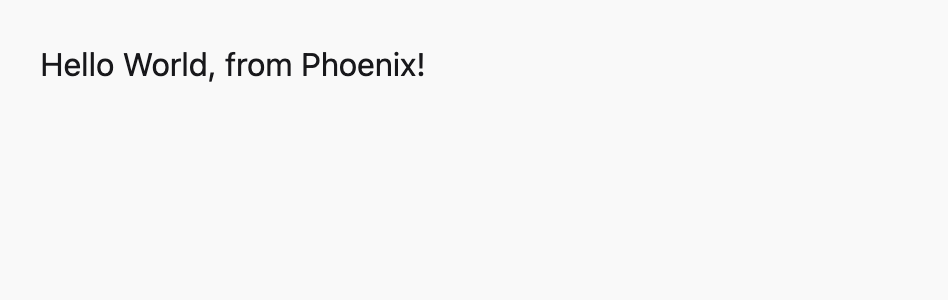
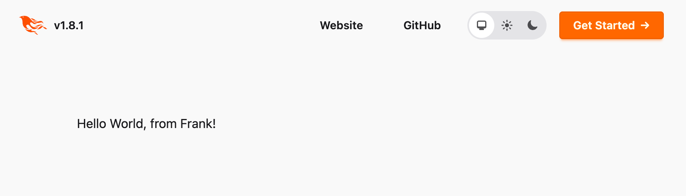

Request life-cycle
View SourceRequirement: This guide expects that you have gone through the introductory guides and got a Phoenix application up and running.
The goal of this guide is to talk about Phoenix's request life-cycle. This guide will take a practical approach where we will learn by doing: we will add two new pages to our Phoenix project and comment on how the pieces fit together along the way.
Let's get on with our first new Phoenix page!
Adding a new page
When your browser accesses http://localhost:4000/, it sends an HTTP request to whatever service is running on that address, in this case our Phoenix application. The HTTP request is made of a verb and a path. For example, the following browser requests translate into:
| Browser address bar | Verb | Path |
|---|---|---|
| http://localhost:4000/ | GET | / |
| http://localhost:4000/hello | GET | /hello |
| http://localhost:4000/hello/world | GET | /hello/world |
There are other HTTP verbs. For example, submitting a form typically uses the POST verb.
Web applications typically handle requests by mapping each verb/path pair onto a specific part of your application. In Phoenix, this mapping is done by the router. For example, we may map "/articles" to a portion of our application that shows all articles. Therefore, to add a new page, our first task is to add a new route.
A new route
The router maps unique HTTP verb/path pairs to controller/action pairs which will handle them. Controllers in Phoenix are simply Elixir modules. Actions are functions that are defined within these controllers.
Phoenix generates a router file for us in new applications at lib/hello_web/router.ex. This is where we will be working for this section.
The route for our "Welcome to Phoenix!" page from the previous Up And Running Guide looks like this:
get "/", PageController, :homeLet's digest what this route is telling us. Visiting http://localhost:4000/ issues an HTTP GET request to the root path. All requests like this will be handled by the home/2 function in the HelloWeb.PageController module defined in lib/hello_web/controllers/page_controller.ex.
The page we are going to build will say "Hello World, from Phoenix!" when we point our browser to http://localhost:4000/hello.
The first thing we need to do is to create the page route for a new page. Let's open up lib/hello_web/router.ex in a text editor. For a brand new application, it looks like this:
defmodule HelloWeb.Router do
use HelloWeb, :router
pipeline :browser do
plug :accepts, ["html"]
plug :fetch_session
plug :fetch_live_flash
plug :put_root_layout, html: {HelloWeb.Layouts, :root}
plug :protect_from_forgery
plug :put_secure_browser_headers
end
pipeline :api do
plug :accepts, ["json"]
end
scope "/", HelloWeb do
pipe_through :browser
get "/", PageController, :home
end
# Other scopes may use custom stacks.
# scope "/api", HelloWeb do
# pipe_through :api
# end
# ...
endFor now, we'll ignore the pipelines and the use of scope here and just focus on adding a route. We will discuss those in the Routing guide.
Let's add a new route to the router that maps a GET request for /hello to the index action of a soon-to-be-created HelloWeb.HelloController inside the scope "/" do block of the router:
scope "/", HelloWeb do
pipe_through :browser
get "/", PageController, :home
get "/hello", HelloController, :index
endA new controller
Controllers are Elixir modules, and actions are Elixir functions defined in them. The purpose of actions is to gather the data and perform the tasks needed for rendering. Our route specifies that we need a HelloWeb.HelloController module with an index/2 function.
To make the index action happen, let's create a new lib/hello_web/controllers/hello_controller.ex file, and make it look like the following:
defmodule HelloWeb.HelloController do
use HelloWeb, :controller
def index(conn, _params) do
render(conn, :index)
end
endWe'll save a discussion of use HelloWeb, :controller for the Controllers guide. For now, let's focus on the index action.
All controller actions take two arguments. The first is conn, a struct which holds a ton of data about the request. The second is params, which are the request parameters. Here, we are not using params, and we avoid compiler warnings by prefixing it with _.
The core of this action is render(conn, :index). It tells Phoenix to render the index template. The modules responsible for rendering are called views. By default, Phoenix views are named after the controller (HelloController) and format (HTML in this case), so Phoenix is expecting a HelloWeb.HelloHTML module to exist and define an index/1 function.
A new view
Phoenix views act as the presentation layer. For example, we expect the output of rendering index to be a complete HTML page. To make our lives easier, we often use templates for creating those HTML pages.
Let's create a new view. Create lib/hello_web/controllers/hello_html.ex and make it look like this:
defmodule HelloWeb.HelloHTML do
use HelloWeb, :html
endTo add templates to this view, we can define them as functions in the module or in separate files.
Let's start by defining a function:
defmodule HelloWeb.HelloHTML do
use HelloWeb, :html
def index(assigns) do
~H"""
Hello!
"""
end
endWe defined a function that receives assigns as arguments and used the ~H sigil to specify the content we want to render. Inside the ~H sigil, we used a templating language called HEEx, which stands for "HTML+EEx". EEx is a library for embedding Elixir that ships as part of Elixir itself. "HTML+EEx" is a Phoenix extension of EEx that is HTML aware, with support for HTML validation, components, and automatic escaping of values. The latter protects you from security vulnerabilities like Cross-Site Scripting with no extra work on your part. We say that any function that receives assigns and returns templates to be a function component.
A template file works in the same way. Let's give it a try by defining a template in its own file. First, delete our def index(assigns) function from above and replace it with an embed_templates declaration:
defmodule HelloWeb.HelloHTML do
use HelloWeb, :html
embed_templates "hello_html/*"
endHere we are saying we want to embed all .heex templates found in the sibling hello_html directory into our module as function components.
Next, we need to add files to the lib/hello_web/controllers/hello_html directory. A template file has the following structure: NAME.FORMAT.TEMPLATING_LANGUAGE. In our case, let's create an index.html.heex file at lib/hello_web/controllers/hello_html/index.html.heex:
<section>
<h2>Hello World, from Phoenix!</h2>
</section>Phoenix will see the template file and compile it into an index(assigns) function, similar as before. There is no runtime or performance difference between the two styles.
Also note the controller name (HelloController) and the view name (HelloHTML) and their respective files, hello_controller.ex and hello_html.ex all follow the same naming convention, and are named after each other. You could name the directory anything you want, as long as you update the embed_templates setting accordingly, but it's best to follow conventions.
lib/hello_web
├── controllers
│ ├── hello_controller.ex
│ ├── hello_html.ex
│ ├── hello_html
| ├── index.html.heex (NEW FILE!)
Now that we've got the route, controller, view, and template, we should be able to point our browser at http://localhost:4000/hello and see our greeting from Phoenix!

In case you stopped the server along the way, the task to restart it is mix phx.server. If you didn't stop it, everything should update on the fly: Phoenix has hot code reloading!
Layouts
Even though our index.html.heex file consists of only a single section tag, the page we get is a full HTML document. Our index template is actually rendered into a separate layout: lib/hello_web/components/layouts/root.html.heex, which contains the basic HTML skeleton of the page. If you open this file, you'll see a line that looks like this at the bottom:
{@inner_content}This line injects our template into the layout before the HTML is sent off to the browser. The root layout, as the name implies, is a barebone layout with mostly the <head> tag and a structure that is shared across all of your pages. Richer features, such as sidebar, menus, etc. are part of your application layout, which we will explore in a couple sections below.
From endpoint to views
Having built our first page, we're beginning to understand how the request life-cycle is put together. Now let's take a more holistic look at it.
All HTTP requests start in our application endpoint. You can find it as a module named HelloWeb.Endpoint in lib/hello_web/endpoint.ex. Once you open up the endpoint file, you will see that, similar to the router, the endpoint has many calls to plug. Plug is a library and a specification for stitching web applications together. It is an essential part of how Phoenix handles requests and we will discuss it in detail in the Plug guide coming next.
For now, it suffices to say that each plug defines a slice of request processing. In the endpoint you will find a skeleton roughly like this:
defmodule HelloWeb.Endpoint do
use Phoenix.Endpoint, otp_app: :hello
plug Plug.Static, ...
plug Plug.RequestId
plug Plug.Telemetry, ...
plug Plug.Parsers, ...
plug Plug.MethodOverride
plug Plug.Head
plug Plug.Session, ...
plug HelloWeb.Router
endEach of these plugs have a specific responsibility that we will learn later. The last plug is precisely the HelloWeb.Router module. This allows the endpoint to delegate all further request processing to the router. As we now know, its main responsibility is to map verb/path pairs to controllers. The controller then tells a view to render a template.
At this moment, you may be thinking this can be a lot of steps to simply render a page. However, as our application grows in complexity, we will see that each layer serves a distinct purpose:
endpoint (
Phoenix.Endpoint) - the endpoint contains the common and initial path that all requests go through. If you want something to happen on all requests, it goes in the endpoint.router (
Phoenix.Router) - the router is responsible for dispatching verb/path pairs to controllers. The router also allows us to scope functionality. For example, some pages in your application may require user authentication, others may not.controller (
Phoenix.Controller) - the job of the controller is to retrieve request information, talk to your business domain, and prepare data for the presentation layer.view - the view handles the structured data from the controller and converts it to a presentation to be shown to users. Views are often named after the content format they are rendering.
Let's do a quick recap on how the last three components work together by adding another page. This time, we will use some additional features, such as layout components and content interpolation.
Another new page
Let's add just a little complexity to our application. We're going to add a new page that will recognize a piece of the URL, label it as a "messenger" and pass it through the controller into the template so our messenger can say hello.
As we did last time, the first thing we'll do is create a new route.
Another new route
For this exercise, we're going to reuse HelloController created at the previous step and add a new show action. We'll add a line just below our last route, like this:
scope "/", HelloWeb do
pipe_through :browser
get "/", PageController, :home
get "/hello", HelloController, :index
get "/hello/:messenger", HelloController, :show
endNotice that we use the :messenger syntax in the path. Phoenix will take whatever value that appears in that position in the URL and convert it into a parameter. For example, if we point the browser at: http://localhost:4000/hello/Frank, the value of "messenger" will be "Frank".
Another new action
Requests to our new route will be handled by the HelloWeb.HelloController show action. We already have the controller at lib/hello_web/controllers/hello_controller.ex, so all we need to do is edit that controller and add a show action to it. This time, we'll need to extract the messenger from the parameters so that we can pass it (the messenger) to the template. To do that, we add this show function to the controller:
def show(conn, %{"messenger" => messenger}) do
render(conn, :show, messenger: messenger)
endWithin the body of the show action, we also pass a third argument to the render function, a key-value pair where :messenger is the key, and the messenger variable is passed as the value.
If the body of the action needs access to the full map of parameters bound to the params variable, in addition to the bound messenger variable, we could define show/2 like this:
def show(conn, %{"messenger" => messenger} = params) do
...
endIt's good to remember that the keys of the params map will always be strings, and that the equals sign does not represent assignment, but is instead a pattern match assertion.
Another new template
For the last piece of this puzzle, we'll need a new template. Since it is for the show action of HelloController, it will go into the lib/hello_web/controllers/hello_html directory and be called show.html.heex. It will look surprisingly like our index.html.heex template, except that we will need to display the name of our messenger. Let's write the new template down and then explain what it does:
<Layouts.app flash={@flash}>
<section>
<h2>Hello World, from {@messenger}!</h2>
</section>
</Layouts.app>If you point your browser to http://localhost:4000/hello/Frank, you should see a page that looks like this:

Let's break what the template does into parts. This template has the .heex extension which stands for HTML + Embedded Elixir. There are three features from HEEx we are using in the template above:
Assigns, such as
@messengerand@flash- values we pass to the view from the controller are collectively called our "assigns". We could access our messenger value viaassigns.messengerandassigns.flash, but Phoenix gives us the much cleaner@syntax for use in templates.Content interpolation, such as
{@messenger}- any Elixir code that goes between{...}will be executed, and the resulting value will replace the tag in the HTML outputFunction component tags, as in
<Layouts.app>- the reason templates are called function components is because we can compose them! In this case, there is anHelloWeb.Layouts.appfunction, that defines our application layout, which we invoke with our custom content
Also note how these three features compose: we are passing the @flash assign as an Elixir value to the <Layouts.app> component. As we will learn later, flash messages are used to display temporary messages to the user, such as success or error messages. We will learn more about them in the Components and HEEx templates guide.
We are done! Feel free to play around a bit. Whatever you put after /hello/ will appear on the page as your messenger.